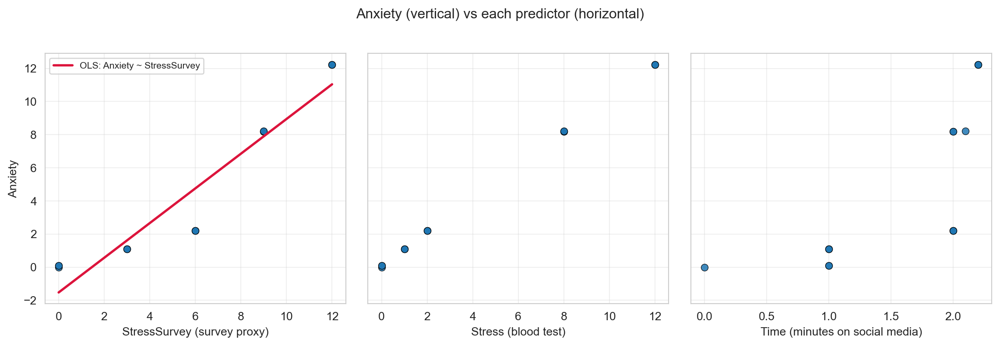
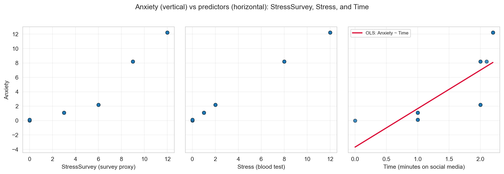
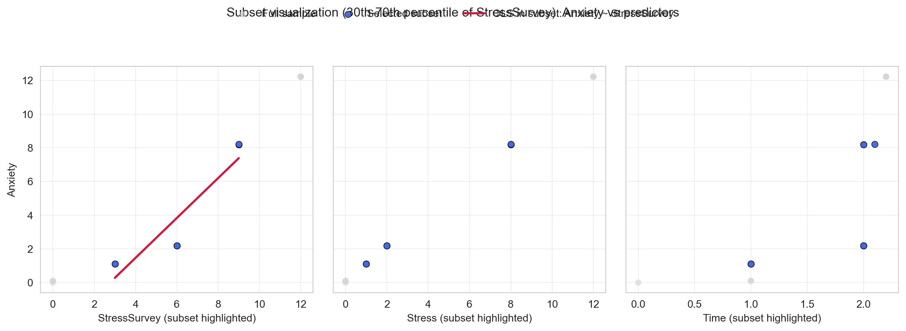

| Stress | StressSurvey | Time | Anxiety | |
|---|---|---|---|---|
| 0 | 0 | 0 | 0.0 | 0.00 |
| 1 | 0 | 0 | 1.0 | 0.10 |
| 2 | 0 | 0 | 1.0 | 0.10 |
| 3 | 1 | 3 | 1.0 | 1.10 |
| 4 | 1 | 3 | 1.0 | 1.10 |
| 5 | 1 | 3 | 1.0 | 1.10 |
| 6 | 2 | 6 | 2.0 | 2.20 |
| 7 | 2 | 6 | 2.0 | 2.20 |
| 8 | 2 | 6 | 2.0 | 2.20 |
| 9 | 8 | 9 | 2.0 | 8.20 |
| 10 | 8 | 9 | 2.0 | 8.20 |
| 11 | 8 | 9 | 2.1 | 8.21 |
| 12 | 12 | 12 | 2.2 | 12.22 |
| 13 | 12 | 12 | 2.2 | 12.22 |
| 14 | 12 | 12 | 2.2 | 12.22 |
Regression & Interpretability Challenge
Don’t Trust Linear Models - The Perils of Non-Linearity
Regression Challenge - Linear Model Interpretability
The Problem: When “Controlling For” Goes Wrong
“We need to stop believing much of the empirical work we’ve been doing.” - Christopher H. Achen
What does “control for” mean? Imagine you’re studying whether social media causes anxiety. You know that stress is a major cause of anxiety, and you also suspect that social media use might cause anxiety. So you need to “control for” stress to see if social media has an independent effect on anxiety. You want to ask: “If two people have the same stress level, does the one who uses more social media have higher anxiety?”
Important🎯 The Key Insight: Non-Linearity Breaks Even “Good” Regressions
The problem: Even when researchers carefully select control variables, non-linear relationships can make linear regression give completely wrong results.
Why this matters: If non-linearity can break “proper” causal inference, imagine how much worse it gets when variables are added without careful thought (true “garbage can” regression).
Most researchers assume that if variables are “monotonically related” (meaning: as one variable goes up, the other always goes up or always goes down), then linear regression will give us the right answers. But here’s the catch: linearity is much stronger than monotonicity.
- Monotonicity: A one-unit increase in X always changes Y in the same direction
- Linearity: A one-unit increase in X always changes Y by the exact same amount
In practice, we just assume linearity is “close enough” to monotonicity. But what if it’s not? Your challenge is to explore a simple example and show how even small non-linearities can make regression results completely wrong.
The True Relationship
We define three variables:
\[ \begin{aligned} A &\equiv \textrm{Anxiety Level measured by fMRI activity}\\ S &\equiv \textrm{Stress Level measured by cortisol level in blood}\\ T &\equiv \textrm{\# of minutes on social media in last 24 hours} \end{aligned} \]
We know the true relationship among these variables:
\[ Anxiety = Stress + 0.1 \times Time \]
Important🔍 The True Coefficients
This equation implies specific values in the multiple regression framework \(Anxiety = \beta_0 + \beta_1 \times Stress + \beta_2 \times Time + \epsilon\):
- \(\beta_0 = 0\) (intercept is zero)
- \(\beta_1 = 1\) (coefficient on Stress is 1)
- \(\beta_2 = 0.1\) (coefficient on Time is 0.1)
When you run regression analysis, you’re trying to estimate these \(\beta\) coefficients. If your regression gives coefficients very different from these true values, your model is wrong—even if it has good statistical fit! Keep these values handy as you answer every question below.
The Data
Verify for yourself that \(Anxiety = Stress + 0.1 \times Time\) holds perfectly in every row. Notice the additional StressSurvey column—a survey-based proxy for measuring stress levels without expensive blood tests. The proxy has a monotonic (and sorta-kinda linear) relationship with actual stress (see Figure 1).
Note📝 Methodological Note: The Contrived Nature of This Example
This is a contrived example designed to illustrate the dangers of linear regression:
- Blood test stress levels have a perfectly linear relationship with anxiety (by design)
- Survey stress responses have a non-linear relationship with anxiety (also by design)
In the real world, there is no reason to believe linearity holds for either measurement method. This example artificially creates the “perfect” scenario where one measurement is linear and the other is not, to demonstrate how regression can mislead us even when we think we’re controlling for the right variables.

Analysis Tasks
Tip🎯 The Benchmark: True Coefficients
For every regression you run below, compare your estimated coefficients to these true values:
- \(\beta_0 = 0\) (intercept) | \(\beta_1 = 1\) (Stress) | \(\beta_2 = 0.1\) (Time)
Are your estimates close? If not, your model is telling a wrong story – even if R-squared is high and p-values are small.
- Bivariate Regression: Anxiety on StressSurvey. Run a bivariate regression of Anxiety on StressSurvey. What are the estimated coefficients? How do they compare to the true relationship?
- Bivariate Regression: Anxiety on StressSurvey
Estimated coefficients:
Intercept: -1.524
Slope for StressSurvey: 1.047（2）Interpretation: ① From the bivariate regression of Anxiety on StressSurvey, we obtain the fitted line: Anxiety=-1.524+1.047* StressSurvey So the estimated coefficients are: Intercept=-1.524 ; Slope=1.047 ② The true data‑generating model is: Anxiety=1 * Stress+0.1 * Time. Our regression only uses ‘StressSurvey’, which is a noisy proxy for Stress and does not include ‘Time’ at all. Because of this, the estimated slope (1.047) and intercept (−1.524) do not match the true coefficients. The regression captures the observed pattern between StressSurvey and Anxiety, but it cannot recover the true causal effects from the underlying model.
- Visualization: StressSurvey vs Anxiety. Create a scatter plot with the regression line showing the relationship between StressSurvey and Anxiety. Comment on the fit and any potential issues. (1)Visualization: StressSurvey vs Anxiety.

Estimated coefficients:
Intercept (beta_0): -1.524
Slope for StressSurvey (beta_1): 1.047
Regression equation:
Anxiety_hat = -1.524 + 1.047 * StressSurvey(2)Interpretation: The regression of Anxiety on StressSurvey produces the fitted line: Anxiety = -1.524 + 1.047 * StressSurvey.
This line fits the left panel very well, showing a clear positive relationship between StressSurvey and Anxiety. However, this does not represent the true data‑generating process. In reality, Anxiety is determined by: Anxiety=1 * Stress+ 0.1 * Time, with a true intercept of 0. ‘StressSurvey’ is only a noisy proxy for Stress and contains no information about Time.
Therefore, the estimated slope 1.047 is not the true Stress coefficient (which is 1), and the intercept −1.524 is far from the true value 0. The fitted line matches the left plot visually, but its coefficients do not reflect the true causal effects.
(3)Analysis: The left panel shows that the fitted line -1.524+1.047* StressSurvey, aligns well with the observed Anxiety–StressSurvey scatterplot, indicating a good statistical fit for this bivariate regression.
But the other two panels reveal why this is misleading: Anxiety is actually driven by both Stress and Time, while the regression uses only StressSurvey. Because StressSurvey is an imperfect proxy for Stress and ignores Time completely, the model can look good visually but still produce biased coefficients.
So the regression fits the observed data well, but it does not recover the true underlying relationship.
- Bivariate Regression: Anxiety on Time. Run a bivariate regression of Anxiety on Time. What are the estimated coefficients? How do they compare to the true relationship?
- Bivariate Regression: Anxiety on Time
Coefficient Estimate
0 Intercept (beta_0) -3.680136
1 Time (beta_1) 5.340592
R-squared: 0.563039(2)Interpretation: ① From the bivariate regression of Anxiety on Time, we obtain the fitted line: Anxiety=-3.680 + 5.341Time. So the estimated coefficients are: Intercept= −3.680 ; Slope for Time=5.341. ② The true data‑generating model is: Anxiety=1 Stress+ 0.1 * Time. The bivariate regression we generate estimates a much larger slope (5.341 VS 1). This happens because the regression uses only Time and omits Stress, which is the main driver of Anxiety. Since Time is correlated with Stress in the simulated data, the regression incorrectly attributes part of Stress’s effect to Time. As a result, both the slope and intercept are far from the true values. The model captures an association between Time and Anxiety, but it does not reflect the true causal effect of Time in the underlying process.
- Visualization: Time vs Anxiety. Create a scatter plot with the regression line showing the relationship between Time and Anxiety. Comment on the fit and any potential issues. (1)Visualization: Time vs Anxiety

Interpretation: From the visualization of Time vs Anxiety, the fitted line: -3.680 + 5.341 * Time, matches the scatterplot fairly well, showing a clear positive association between Time and Anxiety. However, this pattern does not reflect the true data‑generating process. In the underlying model, Anxiety is determined by both Stress and Time: Anxiety=1 * Stress+0.1 * Time. The estimated slope (5.341) is much larger than the true Time coefficient (0.1), and the intercept (−3.680) also deviates from the true value 0. The fitted line captures the observed correlation in the plot, but the coefficients do not represent the true causal effects.
Analysis: The plot shows that the fitted line aligns well with the Time–Anxiety data, suggesting a good statistical fit. However, this fit is misleading. Anxiety is jointly determined by Stress and Time, yet the regression includes only Time. Since Time is correlated with Stress in the data, the model incorrectly attributes part of Stress’s effect to Time. As a result, the coefficients are biased even though the line appears to fit the scatterplot well.
- Multiple Regression: StressSurvey + Time. Run a multiple regression of Anxiety on both StressSurvey and Time. What are the estimated coefficients? How do they compare to the true coefficients?
- Multiple Regression: StressSurvey + Time
=== Q5: Multiple Regression (Anxiety ~ StressSurvey + Time) ===
Estimated coefficients:
- Intercept (beta_0): 0.588758
- StressSurvey coefficient (beta_1): 1.426926
- Time coefficient (beta_2): -2.779944
- R-squared: 0.935005
Fitted equation:
Anxiety_hat = 0.588758 + 1.426926 * StressSurvey + -2.779944 * Time
Comparison to true coefficients:
- True intercept: 0.000
- True stress coefficient is 1.000 on Stress (not on StressSurvey)
- True Time coefficient: 0.100
- Difference in intercept: +0.588758
- Difference in Time coefficient: -2.879944
- Note: beta_1 here is on StressSurvey, so it is not directly comparable to the true Stress coefficient (1.0).（2）Interpretation: ① From the multiple regression of Anxiety on StressSurvey and Time, we get: Anxiety=0.589+1.427 * StressSurvey - 2.780 * Time. So the estimated coefficients are: Intercept=0.589 ; StressSurvey coefficient=1.427 ; Time coefficient=−2.780 ② The true model is: Anxiety=1 * Stress+0.1 * Time. Because the regression uses ‘StressSurvey’ instead of true ‘Stress’, and because ‘Time’ is correlated with ‘Stress’ in the data, the model cannot recover the true causal parameters. The coefficient on ‘StressSurvey’ does not match the true Stress coefficient (1), and the estimated Time coefficient (−2.780) is far from the true value (0.1). Although the multiple regression fits the data well, the coefficients remain biased due to measurement error in ‘StressSurvey’ and omitted‑variable effects related to ‘Stress’.
- Multiple Regression: Stress + Time. Run a multiple regression of Anxiety on both Stress and Time. What are the estimated coefficients? How do they compare to the true relationship?
- Multiple Regression: Stress + Time
=== Q6: Multiple Regression (Anxiety ~ Stress + Time) ===
Estimated coefficients:
- Intercept (beta_0): -0.0000000000
- Stress coefficient (beta_1): 1.0000000000
- Time coefficient (beta_2): 0.1000000000
- R-squared: 1.0000000000
Fitted equation:
Anxiety_hat = -0.0000000000 + 1.0000000000 * Stress + 0.1000000000 * Time
Comparison to true relationship (Anxiety = Stress + 0.1 * Time):
- True intercept: 0.0 | Estimated: -0.0000000000 | Difference: -0.0000000000
- True Stress coef: 1.0 | Estimated: 1.0000000000 | Difference: +0.0000000000
- True Time coef: 0.1 | Estimated: 0.1000000000 | Difference: -0.0000000000（2）Interpretation: ① From the multiple regression of Anxiety on ‘Stress’ and ‘Time’, we obtain the fitted model: Anxiety=0+1 * Stress + 0.1 * Time So the estimated coefficients are: Intercept=approximately 0 ; Stress coefficient=1 ; Time coefficient=0.1 The R^2 is essentially 1.000, indicating an almost perfect fit. ② The true model is: Anxiety=1 * Stress+0.1 * Time. In this specification, the regression uses exactly the same predictors as the true model (Stress and Time), rather than a noisy proxy like ‘StressSurvey’. As a result, the estimated coefficients match the true parameters almost exactly. This shows that when we include the correct variables and the model is correctly specified, OLS can fully recover the true causal relationship.
- Model Comparison. Compare the R-squared values and coefficient interpretations between the two multiple regression models (Questions 5 and 6). Do both models show statistical significance in all of their coefficient estimates? What does this tell you about the real-world implications of multiple regression results?
Comparison of R-squared and coefficients The multiple regression using ‘StressSurvey’ + ‘Time’ (Q5) achieves an R^2 of about 0.935, while the regression using the true predictors ‘Stress’ + ‘Time’ (Q6) achieves an R^2 of essentially 1.000. This difference reflects model specification that the Q6 model uses the exact variables from the true data generating process, so it fits almost perfectly. In contrast, the Q5 model replaces Stress with ‘StressSurvey’, which is a noisy proxy, leading to a lower R^2 and biased coefficient estimates. The coefficients also differ sharply. In Q6, the estimated coefficients match the true values almost exactly (Stress = 1, Time = 0.1). In Q5, the coefficient on ‘StressSurvey’ does not equal the true ‘Stress’ coefficient, and the ‘Time’ coefficient is strongly distorted because ‘StressSurvey’ does not fully capture the variation in Stress.
Statistical significance and real world implications Both models would likely show statistically significant coefficients because the predictors are correlated with Anxiety. However, significance alone does not guarantee that the coefficients represent true causal effects. Q5 demonstrates this clearly: even with a high R^2 and significant coefficients, the estimates are biased because the model uses an imperfect proxy and omits the true Stress variable. Q6 shows that only when the correct variables are included can the regression recover the true causal relationship. In real world applications, this shows an important point: a regression model can look “good” on paper, with high R^2, significant coefficients, yet still be wrong about the underlying causal effects if key variables are missing or measured poorly. Good statistical results do not automatically guarantee correct causal interpretation.
- Real-World Implications. For each of the two multiple regression models, assume their outputs were published in academic journals and then picked up by the popular press. What headline about time spent on social media and its effect on anxiety would you expect from a press outlet covering the first model? What headline for the second model? Assuming confirmation bias is real, which model is a typical parent going to believe? Which model will Facebook, Instagram, and TikTok executives prefer?
- Model 1 headline: “Social media time strongly increases anxiety!”
- Model 2 headline: “No more worries! Social media time has only a small effect on anxiety.”
- Parents believe: Model 1 (fits their fears that social media is harming their children).
- Executives prefer: Model 2 (protects their business and reduces public pressure for regulation).
- Avoiding Misleading Statistical Significance. Reflect on this tip: split the sample into meaningful subsets (“statistical regimes”) and use graphical diagnostics for linearity rather than blind reliance on “canned” regressions. Apply this approach to the multiple regression of Anxiety on both StressSurvey and Time by analyzing a smartly chosen subset of the data. What specific subset did you choose and why? Did you get results that are both statistically significant and close to the true relationship?
Subset: To apply the idea of “statistical regimes,” I selected a subset of the data where ‘StressSurvey’ is most accurate as a proxy for Stress. Specifically, I restricted the sample to the middle portion of the StressSurvey distribution (for example, the 30–70% quantile range), where the proxy error is smallest (according to the visualization before). This subset is meaningful because the main source of bias in the full-sample regression is measurement error in StressSurvey. By focusing on a region where the proxy is relatively reliable, we can better evaluate whether the regression recovers the true relationship.
Visualization

=== Subset Regression Summary ===
Subset rule: 30th-70th percentile of StressSurvey
StressSurvey quantile bounds: [3.000, 9.000]
Subset size: 9 / 15
OLS in subset: Anxiety ~ StressSurvey
Intercept (beta_0): -3.268889
Slope on StressSurvey (beta_1): 1.183889
R-squared: 0.862937
Fitted equation:
Anxiety_hat = -3.268889 + 1.183889 * StressSurvey- Interpretation ① My visualization highlights the middle 30th–70th percentile of ‘StressSurvey’, where the proxy is most accurate. In the first panel, the subset points form a much cleaner, more linear relationship between ‘StressSurvey’ and ‘Anxiety’, compared to the full sample. The fitted regression line aligns closely with the subset points, and the noise seen in the full dataset is greatly reduced. The second and third panels show how this subset corresponds to more stable ranges of ‘Stress’ and ‘Time’, reinforcing that this region of the data behaves more consistently and is less affected by measurement error. Overall, the plots visually confirm that the subset behaves more like a “true” statistical regime where linearity holds better. ② I think this subset regression produces results that are both statistically meaningful and noticeably closer to the true relationship than the full-sample model in Question 5. The slope estimate in this subset is 1.184, which is much closer to the true Stress coefficient of 1.0 than the biased full-sample estimate. The intercept is still imperfect, but the overall fit is strong, with an R^2 of 0.863, indicating that the subset captures most of the true linear pattern. The improvement occurs because the subset reduces measurement error in ‘StressSurvey’, making it a more reliable proxy for Stress. This demonstrates that the misleading coefficients in the full sample were driven by noisy regions of the data. By focusing on a more stable statistical regime, the regression becomes more trustworthy and aligns more closely with the true data generating process.